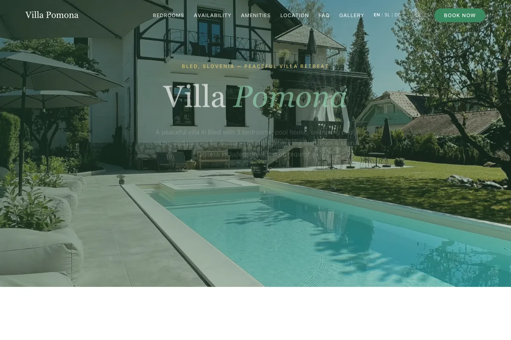
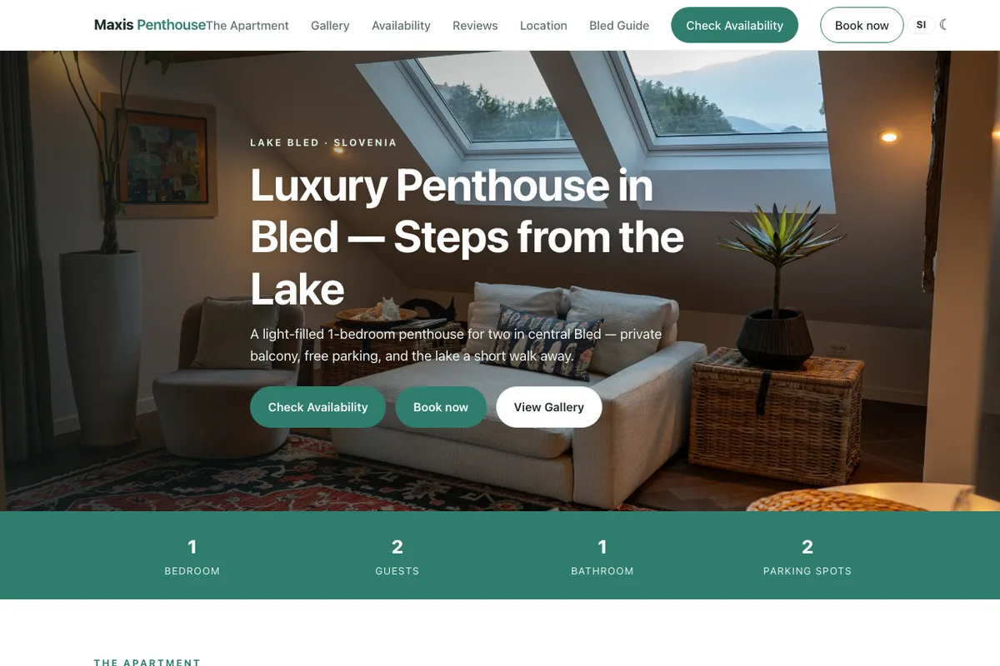
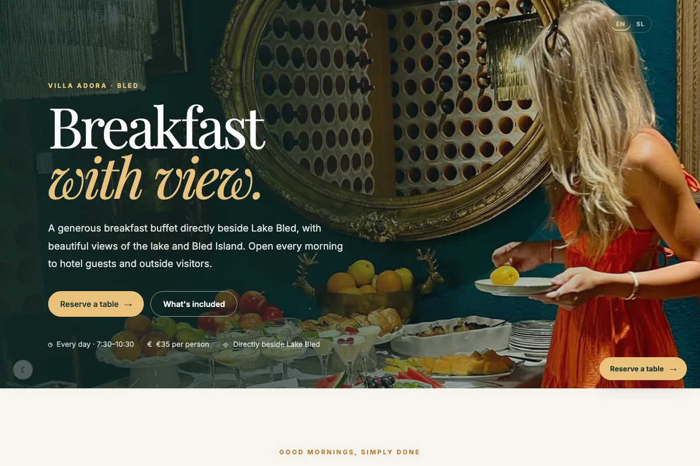

Hospitality · Bled
Villa Pomona Bled
A live website for a historic boutique hotel. The visual direction and booking path are shown here as a portfolio reference.
Visit the live siteWebsites
I build focused, fast, mobile-first websites for people and places that need to be understood quickly.

Hospitality · Bled
A live website for a historic boutique hotel. The visual direction and booking path are shown here as a portfolio reference.
Visit the live site
Real estate · Bled
A gallery-led presentation for a luxury property, designed to keep the place and its photography in focus.
Visit the live site
Hospitality · Breakfast
A warm, direct website for a breakfast destination, using photography and concise information to support a visit.
Visit the live siteWhat I care about
Visitors should know what a business does, where it is, and what to do next.
Lightweight pages, responsive behavior, and accessible content are part of the work.
A sensible foundation makes later content, campaigns, and improvements easier to add.
Tell me what you are building, who it is for, and what needs to work better.
Build a website